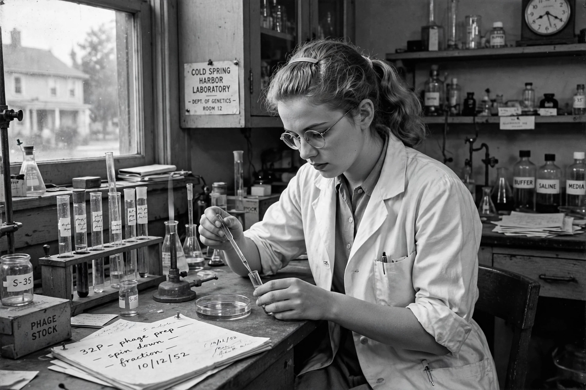

| Born | November 30, 1927, Cleveland, Ohio, U.S. |
|---|---|
| Died | August 8, 2003 (aged 75), Lorain, Ohio, U.S. |
| Education | College of Wooster (BS), University of Southern California (PhD) |
| Known for | Hershey–Chase experiment |
| Fields | Genetics, virology |

Martha Cowles Chase (November 30, 1927 – August 8, 2003) was an American geneticist who in 1952, with Alfred Hershey, conducted the famous Hershey–Chase experiment, which helped to confirm that DNA, not protein, is the genetic material of life.
Chase was born in Cleveland, Ohio, into a family of scientists. She earned her bachelor's degree from the College of Wooster in 1950 and began work as a research assistant to Alfred Hershey at the Cold Spring Harbor Laboratory, a center of the phage group led by Max Delbrück and Salvador Luria.
In 1952, Chase and Hershey infected bacteria with T2 bacteriophage whose DNA was labeled with radioactive phosphorus-32 and whose protein coats were labeled with sulphur-35. Using a simple kitchen blender to shear the empty phage coats from the bacterial cells, they showed that only the DNA entered the cells and directed production of new phage — confirming DNA as the hereditary molecule. The experiment, nicknamed the "blender experiment," was a decisive confirmation of the earlier Avery–MacLeod–McCarty result.
Chase completed her PhD at the University of Southern California in 1964 and worked at the Oak Ridge National Laboratory and the University of Rochester. When Hershey shared the 1969 Nobel Prize with Delbrück and Luria, Chase — like many women scientists of her era — was not included. She left research in the 1970s and died in Lorain, Ohio, in 2003.
From Wikipedia, the free encyclopedia. Recreated from memory.